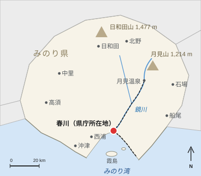

春川中央駅
| 春川中央駅 Harukawa Central Station | |
|---|---|
 夕暮れの駅ビル北口 | |
 みのり県内の位置 | |
| 駅概要 | |
| 所在地 | みのり県春川市駅前町1-1 |
| 所属事業者 | 春川鉄道 |
| 所属路線 | 鏡線（0.0 km） 湾岸線（0.0 km） |
| ホーム | 島式2面・単式1面 |
| 線路数 | 5線（1 - 3番線、5・6番線） |
| 構造 | 高架駅 |
| 駅ビル | 春川中央テラス（2011年） |
| 歴史 | |
| 開業 | 1926年（大正15年）7月15日（春川駅） |
| 改称 | 1962年（昭和37年）10月1日 |
| 高架化 | 2011年（平成23年）3月26日 |
| 利用状況 | |
| 2025年度 | 1日平均乗車人員 38,420人 |

春川中央駅（はるかわちゅうおうえき）は、みのり県春川市駅前町にある、春川鉄道（ハルテツ）の駅である。同社の2路線、月見温泉方面へ向かう鏡線と、みのり港へ向かう湾岸線の起点で、特急「月影」は全列車が当駅を始発・終着とする。春川城の南、徒歩15分ほどの位置にあり、2025年度の1日平均乗車人員は38,420人と、同社の駅の中で群を抜いて多い[1]。
1926年7月15日に春川駅として開業し、湾岸線が開業した1962年10月1日に現駅名に改称した。現在の高架駅と、商業施設と同社本社が入る駅ビル春川中央テラスは、2011年3月26日に開業した。
歴史[編集]
1926年7月15日、鏡谷鉄道の最初の区間（春川 - 釜野間）の起点として、当時の市街地南端に小さな木造駅舎で開業した[2]。1945年7月29日の空襲で駅舎は周辺市街地とともに焼失し、仮駅舎で営業したのち、1953年に鉄筋コンクリート造2階建ての駅舎が完成した[要出典]。駅前広場は戦災復興計画による幅員50 mの鷺舞通り（1949年 - 1958年建設）の起点となった。
1962年10月1日に旅客・貨物の両方を扱う湾岸線がみのり港まで開業すると、湾岸線用の島式ホーム1面と駅南側の貨物ヤードが設けられ、駅名を春川中央駅に改めた。貨物ヤードは1987年の貨物輸送廃止とともに閉鎖され、跡地は後に南口の広場となった。1998年には湾岸線の春川中央 - 新港通間が高架化された。
2004年、みのり県・春川市・ハルテツの3者は鏡線の線路を高架化する連続立体交差事業に着手した。事業費は248億円で、踏切6か所が解消された[3]。2011年3月26日に高架駅と春川中央テラスが開業し、同社は本社を新駅ビルに移転した[4]。
駅構造[編集]
3階に5線の頭端式ホームを持つ高架駅である。鏡線の1・2番線と湾岸線の5・6番線がそれぞれ島式ホーム、特急「月影」専用の3番線が単式ホームで、4番線はない。改札口とコンコースは2階にあり、コンコースは春川中央テラスの2階と直結している。各ホームへは階段とエレベーターで連絡し、改札からホームまで点字ブロックと音声案内のチャイムが設置されている[要出典]。
| 番線 | 路線 | 行先 |
|---|---|---|
| 1 | 鏡線 | 普通・快速 釜野・鏡峡・月見温泉方面 |
| 2 | 鏡線 | 釜野・月見温泉方面からの到着列車 |
| 3 | 鏡線 | 特急「月影」月見温泉方面 |
| 5 | 湾岸線 | 下り みのり港方面 |
| 6 | 湾岸線 | みのり港方面からの到着列車 |
出口と駅施設[編集]
出口は3か所ある。北口が正面口で、駅前広場には16のりばを持つバスターミナルがあり、春川市営バスや長距離バスが発着する。タクシー乗り場もあり、城下町や鏡川の方面に面している。春川城までは徒歩約15分、または12分間隔で運行する市営バス1系統「城下町循環」で6分である。鏡線で1駅の城町駅が城の最寄り駅となっている。南口は湾岸線のコンコースに通じ、タクシー乗り場、高速バス乗り場、みのり空港行きの空港リムジンバス乗り場がある。リムジンバスは30分間隔で運行し、所要55分、運賃1,300円である。東口は6時から23時まで通行でき、駅前商店街や徒歩8分の春川市役所に通じる。
駅の主な施設は次のとおりである。
- 春川市観光案内所：北コンコース（8時30分 - 19時）。英語・中国語・韓国語に対応する。
- ハルカサービスカウンター：2階コンコースの中央改札横。ハルカや定期券の発行・払い戻しを行う。
- きっぷ売り場：6時 - 22時。特急「月影」の指定席は5時30分 - 23時に販売する。
- コインロッカー：180個。
駅ビルの春川中央テラスは地上7階・地下1階建てである。地下1階から4階には約85の店舗・飲食店が入り、地下の食品売り場では鯛柚子めしの弁当などの郷土料理を、ギャラリーショップでは春川焼を扱う[5]。クモモバイル春川中央店は駅ビルの外、南口のすぐ近く（徒歩1分）にある。5階はクリニックと事務所、6・7階はハルテツの本社である。
利用状況[編集]
2025年度の1日平均乗車人員は38,420人で、両線間の乗換客を含む[6][注 1]。
| 年度 | 乗車人員 |
|---|---|
| 2016年度 | 41,140 |
| 2019年度 | 39,730 |
| 2020年度 | 27,920 |
| 2021年度 | 30,920 |
| 2022年度 | 34,950 |
| 2023年度 | 37,110 |
| 2024年度 | 37,860 |
| 2025年度 | 38,420 |
駅周辺[編集]
北口の前からは、復興後の市中心部の目抜き通りである鷺舞通りが延び、駅前地区のホテル・銀行・事務所が建ち並ぶ。春川灯籠まつりの会場の一つである鏡川河畔プロムナードまでは北口から徒歩約5分で、灯籠が流される鏡橋や呉服町商店街はその先にある。東口は駅前商店街と市役所に通じ、南口側にはビジネスホテルと、湾岸線の隣駅が最寄りとなる本町地区がある。
関連項目[編集]
脚注[編集]
注釈[編集]
- ^ この数値は両線の合計であり、ハルテツは当駅の鏡線・湾岸線別の乗車人員を公表していない。